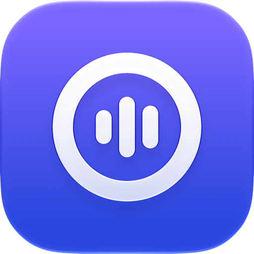

Orra
Habla
y queda escrito.
Dicta y traduce en cualquier app, también en tus llamadas. Todo funciona en tu Mac.
Versión 0.6.0 Requiere una Mac con Apple Chip, macOS 15.6 o posterior y unos 6 GB de espacio disponible.
Se adapta a cómo
hablas de verdad.
Tu vocabulario
Agrega los nombres y términos que usas, y Orra los escribe como tú.
Aprende de tus correcciones
Corrige una palabra mal oída después de un dictado, y Orra recuerda lo que escribió y cómo lo corregiste. La próxima vez, escribe la palabra como tú. Está desactivado de forma predeterminada. Nunca guarda oraciones completas. Con japonés o español como idioma de dictado, por ahora el aprendizaje solo funciona con oraciones en inglés.
Dos idiomas mezclados
Habla en chino, en inglés o en los dos en la misma oración. En Idioma de dictado, en Configuración, puedes elegir en su lugar japonés o español con inglés, en beta.
Traducción
Presiona la tecla de traducción y habla, y Orra traduce entre el inglés y tu idioma de dictado, chino, japonés o español. Funciona en tu Mac.
Interpretación en reuniones
Lee en tu idioma lo que dicen los demás y deja que te escuchen en el suyo, incluso con tu propia voz.
Subtítulos en vivo
Orra muestra lo que reproduce tu Mac, como una llamada, en forma de subtítulos traducidos en una ventana flotante. Traduce con el mismo modelo en tu Mac que usa la tecla de traducción. Nunca usa el micrófono, y los subtítulos solo se guardan en la memoria.
Leer traducciones a los demás
Con Traducción y Leer traducciones a los demás activados en Configuración, presiona la tecla de traducción y habla. Un modelo de síntesis de voz en tu Mac lee la traducción y la envía a Orra Microphone. Elige Orra Microphone como micrófono en tu app de llamadas, y la otra persona escucha tus palabras en su idioma. Graba una muestra de voz corta y hablará con tu propia voz. Usa solo tu propia voz, y avisa a los demás que escuchan una voz sintetizada.
El modelo de síntesis de voz es una descarga de unos 2 GB. Orra Microphone se descarga por separado.
Proyectos Vista previa
Tu correo, clasificado y explicado en tu Mac.
Elige los buzones de Mail que lee Orra y agrega tus proyectos con sus carpetas y personas, o empieza con los proyectos que Orra sugiere. Orra clasifica cada correo nuevo en su proyecto. Haz clic en Explicar, y el modelo de tu Mac enumera lo que dice el correo, con sus fuentes en los archivos del proyecto, sus adjuntos y correos anteriores, y las preguntas que solo tú puedes decidir. La explicación aparece en inglés. Cuando el correo necesita respuesta, le sigue un borrador en el idioma del correo, chino o inglés, que cambias escribiendo o con la tecla para hablar y pegas en la ventana de respuesta de Mail.
Orra nunca envía, mueve ni elimina correos, y nunca se conecta por su cuenta a un servidor de correo. Al asignar, editar o eliminar en Proyectos, solo cambia lo que Proyectos guarda en tu Mac, nunca tu correo en Mail. Proyectos está desactivado hasta que lo activas en Configuración, y requiere una Mac con 16 GB de memoria o más. Es una vista previa, así que todavía puede cambiar.
Privacidad
Lo que dices se queda en tu Mac.
Solo necesitas Internet para descargar Orra y sus modelos. Aparte de eso, Orra solo se conecta para buscar actualizaciones, y solo si lo permites. Todo lo demás funciona en tu Mac, y Orra nunca guarda tus grabaciones ni lo que dijiste, con dos excepciones. Si activas Recordar mi voz, guarda el audio de tu muestra de voz, nunca sus palabras. Y Proyectos guarda lo que escribes o dices para cambiar un borrador, junto con el borrador, durante 30 días desde su último cambio. Proyectos lee tu correo a través de la app Mail de tu Mac y nunca se conecta por su cuenta a un servidor de correo, y lo que guarda se queda en tu Mac. Los detalles de privacidad están en GitHub.
Código abierto
El código de Orra está escrito en Swift y SwiftUI y se publica con la licencia MIT. Lee el código, compílalo por tu cuenta o ayuda a mejorarlo.
Comentarios
¿Encontraste un error o te falta algo? Selecciona Reportar un problema… en el menú de Orra, o cuéntanos en GitHub.